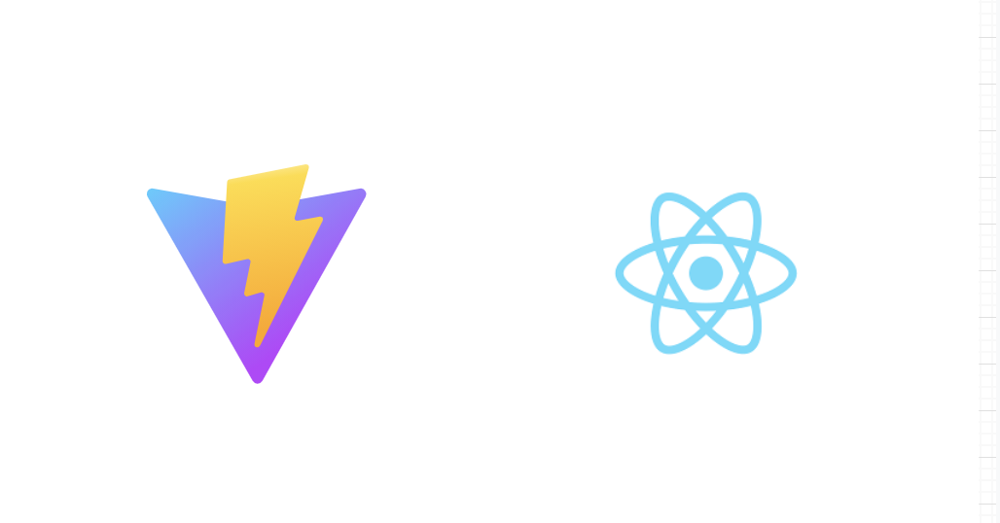

本資料はAWS Cloud Development Kit(CDK)を初めて触る方をターゲットにCDKの環境構築方法とCDKを使ってAWS上にアプリケーションをデプロイする方法を紹介します。
インフラ構成をコードで管理するIaC(Infrastracture as Code)をハンズオンを通じて体験していきましょう。
IaCとは
IaCとはインフラのシステム構成をコードを用いて定義することをいいます。
インフラを構築するためには様々なアプリケーション、サービスをセットアップする必要がありますが、そのインフラの構成が複雑になればなるほど再構築が難しくなってきます。
そして手順書があっても見落として不具合につながる可能性も高くなります。
そのような問題を解決するのが「IaC(Infrastracture as Code)」です。
コードでインフラのシステム構成を定義することで必要なソフトウェアが自動的にセットアップされます。
これにより環境構築が自動化されるので、ヒューマンエラーを減らすだけではなく管理コストも大きく下げることができます。
AWS CDKとは
AWS CDKはAWSのサービス構成をコードで定義するためのIaCツールです。クラウドのアプリケーション構成をモダンなプログラミング言語で定義することができて、最終的にはCloudFormationのテンプレートに変換されてデプロイをされます。
CDKを使って開発することで以下のようなメリットがあります。
- AWSのサービス構成をアプリケーションのコードと一緒にGitレポジトリと一緒に管理することができる→チームメンバーがインフラベースからアプリケーション構成を理解しやすくなる
- 共通で構築するリソース定義をモジュール化し、他のプロジェクトで使いまわしがしやすい
- 認証するAWSアカウントを変更することで、複数の環境で同じインフラ構成をデプロイできるため、再現性が高い
このハンズオンで作るもの
このハンズオンではシンプルなTodoアプリケーションの構築を通じてCDKの使い方、IaCの魅力を体験して頂きます。
Step1ではECS Fargate + API Gatewayを使ったAPIを構築します。
Step2ではDynamoDBのテーブルを用意して、Step1で構築したAPIに接続できるようにします。
Step3ではS3 + CloudFrontを使ってフロントエンドをホスティングしてStep1で構築したAPIで通信できるようにします。
今回構築するアプリケーションの構造がわかったところで、次のページから環境構築していきます。
今回のハンズオンの環境構築をやっていきます。
なお、リージョン違いでのトラブルを防ぐためAWSの作業はすべてap-northeast-1(東京リージョン)で行います
事前準備
- AWSアカウント(IAMユーザーでログインしている場合は、AdministratorAccessポリシーが必要です。AWSアカウントをお持ちで無い方はhttps://aws.amazon.com/jp/register-flow/ を参考に登録してください)
EC2上にcode-serverを構築
まずは開発環境を用意します。今回は環境の差異をなくすため、CDKの実行環境を構築したEC2インスタンス上で動作するcode-server を用意します。code-serverはオンラインでVS Codeを動かすためのオープンソースのツールです。
手順を簡略化させるため、今回はこのcode-serverを動作させるための最小構成のセットアップをするCloudFormationテンプレートを使ったスクリプトを用意したので、それを使ってCDKの開発環境を構築していきます。
AWSのマネジメントコンソールを開きCloudShellを開きます。
CloudShellは右上のターミナルアイコンから開くことができます。このとき、リージョンはアジアンパシフィック(東京)になっていることを確認してください。
CloudShellを開いたら、以下のコマンドでスクリプトが入ってるレポジトリをクローンしてきます。
git clone https://github.com/Miura55/ec2-code-server.gitクローンしたら以下のコマンドでスクリプトを起動します。
cd ec2-code-server
./deploy.shここから対話形式でセットアップをします。まずは、SSH接続で必要なキーペアを設定する項目ですが、今回は特にSSH接続を行う必要はないので、何も入力せずEnterキーを入力します。
Enter key pair name (optional, press Enter to skip): インスタンスタイプを設定します。特にこだわりが無ければデフォルトの t3.medium を設定し、Enterキーを入力します。
Instance type (t3.medium):
AMIはAmazon Linux 2023のAMI IDがデフォルトで設定されています。このままで問題なければEnterキーを入力します。
AMI ID (ami-07faa35bbd2230d90):続いてパスワードの設定です。パスワードは自分が覚えやすいものを設定し、Enterキーを入力します。
※入力内容が非表示になる設定を入れています。
VSCode Server password (vscode-password):CIDRは 0.0.0.0/0 を設定し、Enterキーを入力します。
Allowed CIDR (0.0.0.0/0):以上の設定を行うと、CloudFormation上に vscode-cdk-dev という名前のスタックが作成されます。
リソースの作成状況はマネコンのCloudFormationの画面で確認できます。
作成が完了するとCloudShellから以下の出力がされたら、スタックの作成は正常に完了しています。
--------------------------------------------------------------------------------------------------------------------------
| DescribeStacks |
+-----------------------------------------+-----------------------+------------------------------------------------------+
| Description | OutputKey | OutputValue |
+-----------------------------------------+-----------------------+------------------------------------------------------+
| EC2 Instance ID | InstanceId | i-03abcdef10caf14e2 |
| Public IP address of the instance | PublicIP | 11.111.111.11 |
| Password for VSCode Server | VSCodeServerPassword | vscode-serer |
| URL to access VSCode Server | VSCodeServerURL | http://11.111.111.11:8080 |
+-----------------------------------------+-----------------------+------------------------------------------------------+
この出力の中にある VSCodeServerURL の値をコピーし、ブラウザで開くと以下の画面が表示されます。ここで、VSCodeServerPassword で設定したパスワードを入力します。
以下の通りVS Codeの画面が表示されていればオンラインの開発環境は構築されています。
CDKのプロジェクトを作成する
実行環境を用意できたところで、今回使用するCDKのプロジェクトの雛形を用意します。CDKのプロジェクトを作るためには空のディレクトリを用意する必要があるので以下のコマンドでディレクトリを用意します。
mkdir cdk-handson
cd cdk-handsonpwd と入力したときに以下のパスが表示されたら問題ありません。
/home/ec2-user/cdk-handson空のディレクトリが用意できたところで以下のコマンドを実行しCDKアプリを用意します。
cdk init app --language typescriptCDKプロジェクトが用意できたので、作業を円滑に行うためにエディタでCDKのプロジェクトがあるディレクトリを開きます。左のメニューバーにあるファイルアイコンをクリックし、「Open Folder」をクリックします。
開くフォルダを聞かれるので、 /home/ec2-user/cdk-handson を入力し、OKボタンを押します。
以下の構成のファイルが表示されたら、開発環境の準備は完了です。
Bootstrap
CDKでデプロイする前にAWS側でデプロイ時のデータを保持するためのリソースを用意する必要があります。これを Bootstrap といいます。
環境構築の最後の作業として以下のコマンドでBootstrapを実行します
cdk bootstrap実行後各種リソースが作成されて以下のようなメッセージが表示されたらBootstrapは正常に完了しています。
CDKToolkit: creating CloudFormation changeset...
✅ Environment aws://123456789000/ap-northeast-1 bootstrapped.ちなみにAWSのコンソールでCloudFormationを確認すると、以下のように「CDKToolkit」という名前のスタックが作られていますが、これがCDKでデプロイするときのデータを保持しておくリソースが作成されています。余裕がある方はスタックを開いていただき、どんなリソースが作成されているか見てみるといいです。
以上で環境構築は完了です。次のページからCDKを使ってAWSのアプリケーションを構築していきます。
ここからCDKを使ってアプリケーションを構築していきます。まずはVPCを構築してECS Fargateを使ったAPIを構築していきます。
ソースコードをダウンロード
前のページで作成したCDKアプリのディレクトリ( cdk-handson )上で以下のコマンドを実行してAPIのソースコードをダウンロードして展開します。
wget -O api.zip https://github.com/Miura55/jawsug-nagoya-cdk-handson/releases/download/v1.0.0/api-asset-v1.0.0.zip
unzip api.zip展開して以下のように cdk-handson 配下に api ディレクトリが作成されたら問題ありません。
APIを構築するコンストラクトのコード
APIのコードを用意できたら、ターミナルを開きます。
以下のコマンドで今回作成するアプリケーションの各ステップで作成するリソースを定義したモジュール(以下、コンストラクト)を保存するディレクトリを作成します。
mkdir -p lib/constructs/続いてAPIのコンストラクトのファイルを以下のコマンドで新規作成します。
touch lib/constructs/api-construct.tslib/constructs/api-construct.ts に以下のコードを書き込みます。
import { Construct } from 'constructs';
import { HttpApi, CorsHttpMethod, HttpMethod, VpcLink } from 'aws-cdk-lib/aws-apigatewayv2';
import { HttpAlbIntegration } from 'aws-cdk-lib/aws-apigatewayv2-integrations';
import * as cdk from 'aws-cdk-lib';
import { SecurityGroup, Vpc, Port, Peer } from 'aws-cdk-lib/aws-ec2';
import { Cluster, ContainerImage, LogDriver } from 'aws-cdk-lib/aws-ecs';
import { DockerImageAsset } from 'aws-cdk-lib/aws-ecr-assets';
import { ApplicationLoadBalancedFargateService } from 'aws-cdk-lib/aws-ecs-patterns';
import { RetentionDays } from 'aws-cdk-lib/aws-logs';
import { IRole } from 'aws-cdk-lib/aws-iam';
interface ApiProps {
tableName: string;
}
export class ApiConstruct extends Construct {
public readonly apiEndpoint: string;
public readonly fargateTaskRole: IRole;
constructor(scope: Construct, id: string, props: ApiProps) {
super(scope, id);
// VPC
const vpc = new Vpc(this, 'Vpc', {
maxAzs: 2,
});
// ECS Cluster
const cluster = new Cluster(this, 'Cluster', {
clusterName: 'handson-api-cluster',
vpc: vpc,
});
// VPC Link用のセキュリティグループを作成
const vpcLinkSecurityGroup = new SecurityGroup(this, 'VpcLinkSecurityGroup', {
vpc: cluster.vpc,
description: 'Security group for VPC Link',
allowAllOutbound: true, // ALBへのアウトバウンド通信を許可
});
// ALBへのアクセスを許可（ALBがポート80でリッスンしている場合）
vpcLinkSecurityGroup.addEgressRule(
Peer.anyIpv4(),
Port.tcp(80),
'Allow outbound HTTP to ALB'
);
// または、ALBがポート8000でリッスンしている場合
vpcLinkSecurityGroup.addEgressRule(
Peer.anyIpv4(),
Port.tcp(8000),
'Allow outbound to ALB on port 8000'
);
// VPC Linkを明示的に作成（セキュリティグループを指定）
const vpcLink = new VpcLink(this, 'ApiVpcLink', {
vpc: cluster.vpc,
subnets: {
subnets: cluster.vpc.privateSubnets,
},
securityGroups: [vpcLinkSecurityGroup], // 作成したセキュリティグループを指定
});
// Docker Image Asset
const imageAsset = new DockerImageAsset(this, 'ImageAsset', {
directory: './api',
});
// ALB付きFargateサービス
const fargateService = new ApplicationLoadBalancedFargateService(this, 'FargateService', {
cluster,
memoryLimitMiB: 512,
cpu: 256,
taskImageOptions: {
image: ContainerImage.fromDockerImageAsset(imageAsset),
containerPort: 8000,
enableLogging: true,
logDriver: LogDriver.awsLogs({
streamPrefix: 'handson-api',
logRetention: RetentionDays.ONE_DAY,
}),
environment: {
'AWS_REGION': cdk.Stack.of(this).region,
'DYNAMO_TABLE': props.tableName,
},
},
taskSubnets: {
subnets: cluster.vpc.privateSubnets,
},
listenerPort: 8000, // ALBリスナーを8000ポートに設定
});
// ヘルスチェックパスを設定
fargateService.targetGroup.configureHealthCheck({
path: '/',
});
// ALB Integration
const albIntegration = new HttpAlbIntegration('HttpApiIntegration', fargateService.listener, {
vpcLink: vpcLink
});
// HTTP API
const httpApi = new HttpApi(this, 'HttpApi', {
apiName: 'handson-api',
corsPreflight: {
allowOrigins: ['*'],
allowHeaders: ['*'],
allowMethods: [CorsHttpMethod.ANY],
},
});
// Routes
httpApi.addRoutes({
path: '/{proxy+}',
methods: [HttpMethod.ANY],
integration: albIntegration,
});
// Output
new cdk.CfnOutput(this, 'ApiEndpoint', {
value: httpApi.apiEndpoint,
});
// スタックの外から参照できるようにする
this.apiEndpoint = httpApi.apiEndpoint;
this.fargateTaskRole = fargateService.taskDefinition.taskRole;
}
}
用意したコンストラクトをスタックに反映するために、 lib/cdk-handson-stack.ts を以下のコードに書き換えます。
import * as cdk from 'aws-cdk-lib';
import { Construct } from 'constructs';
import { ApiConstruct } from './constructs/api-construct';
export class CdkHandsonStack extends cdk.Stack {
constructor(scope: Construct, id: string, props?: cdk.StackProps) {
super(scope, id, props);
const tableName = 'cdk-handson-todo';
// API Construct
const api = new ApiConstruct(this, 'Api', {
tableName: tableName
})
}
}
ここで変数 api を定義していますが、これは後で作成するスタックで必要になるのでそのままにしておいてください。
テンプレートの作成
CDKはコードで書いたスタックをCloudFormationのテンプレートに変換してAWSにデプロイします。そこで実際にこのステップで用意したスタックでどんなテンプレートが作成されるかを見てみます。
cdk-handson ディレクトリ上で以下のコマンドを実行するとCloudFormationのテンプレートが実行結果に出力されます。
cdk synth実行結果ではYaml形式でテンプレートが出力されます。実際に書いたコードよりも膨大な量のテンプレートが作成されることがおわかりいただけると思います。CDKでデプロイをするのであれば cdk deploy 時にCloudFormationのテンプレートは作成されるので、このコマンドを実行する必要はありません。
デプロイ
それではAWSにデプロイしてみましょう。デプロイは以下のコマンドを実行します
cdk deploy実行するとAPIのコンテナイメージのビルドが実行されて先程Bootstrapで作成されたECRレポジトリにPushします。その後作成されるAWSのリソースが一覧で表示され、以下の質問が表示されるので、 y と入力してエンターキーを押すと次に進みます。
Do you wish to deploy these changes (y/n)? 以下のようにAWSのリソースが自動で構築されていきます。初回はデプロイに時間がかかります。
デプロイが完了し、以下のように出力が表示されたらデプロイは正常に完了しています。
ApiEndpoint は今後の手順で必要になるのでどこかにメモしておきます。
Outputs:
CdkHandsonApiStack.ApiEndpoint = https://odbhg8has3.execute-api.ap-northeast-1.amazonaws.com
CdkHandsonApiStack.FargateServiceLoadBalancerDNS8987E = CdkHa-Farga-D6UWOZCNQBIG-184184.ap-northeast-1.elb.amazonaws.com
CdkHandsonApiStack.FargateServiceServiceURL454545 = http://CdkHa-Farga-A3HZCNQBIG-3212312.ap-northeast-1.elb.amazonaws.com
動作確認
それでは動作確認です。
先程のデプロイ後の出力の中にある CdkHandsonApiStack.ApiEndpoint の値にあるURLを開くと以下のJSONが表示されます。
{
message: "Hello World"
}
今回デプロイしたAPIはAPIドキュメントを用意しています。APIドキュメントはブラウザで [CdkHandsonApiStack.ApiEndpoint]/docs を入力すると開きます。ここにあるAPIが今回構築するアプリケーションで使うものです。
先程に開いたJSONのAPIが GET / で、ALBのヘルスチェックやAPIの動作確認用途のAPIです。
APIドキュメントで動作確認をするには、動作確認したいAPIのアコーディオンを開いて Try it out ボタンを押すと表示される Execute ボタンを押すことでAPIを実行することができます。

その他のAPIはDynamoDBのデータを取得・書き込み・削除するAPIですが、このAPIは現状動作しないはずです。試しに GET /messages を実行してみると、以下のようにステータスコード 500 を返します。
500を返す原因はデプロイしたAPIの中でDynamoDBにアクセスするためのロールが割り当てられてないのとそもそもまだDynamoDBのテーブルが作成されていないからです。
というわけで次のステップでは、このDynamoDBのテーブルを作成して、このAPIに接続できるようにしていきます。
Step1でAPIを作成しましたが、DynamoDBのテーブルが作成されていないことでエラーになっていました。そこでこのステップでは今回のアプリケーションに使用するDynamoDBのテーブルの作成とそれをAPIに接続するためのスタックを用意します。
データベースを構築するコンストラクトのコード
APIのスタックと同様に cdk-handson/lib ディレクトリ内にデータベースを構築するためのコンストラクトを用意します。
以下のコマンドでコンストラクトのコードを新規作成します。
touch lib/constructs/database-construct.tslib/constructs/database-construct.ts に以下のコードを書いて保存します。
import * as cdk from "aws-cdk-lib";
import { Construct } from "constructs";
import { Table, AttributeType, BillingMode } from "aws-cdk-lib/aws-dynamodb";
import { IRole } from "aws-cdk-lib/aws-iam";
interface DatabaseConstructProps extends cdk.StackProps {
tableName: string;
fargateTaskRole: IRole;
}
export class DatabaseConstruct extends Construct {
constructor(scope: Construct, id: string, props: DatabaseConstructProps) {
super(scope, id);
const table = new Table(this, "TodoTable", {
partitionKey: {
name: "id",
type: AttributeType.STRING,
},
tableName: props.tableName,
billingMode: BillingMode.PAY_PER_REQUEST,
removalPolicy: cdk.RemovalPolicy.DESTROY,
});
// FargateタスクにDynamoDBへのアクセス権限を付与する
table.grantFullAccess(props.fargateTaskRole);
}
}
こちらのコードではただテーブルを作成するだけではなく、table.grantFullAccess で先程構築したFargateのタスクロールにDynamoDBのアクセス権限を付与する処理も行っているのでこのコンストラクトを追加するだけでAPIでDynamoDBの操作をすることができるようになります。
作成したコンストラクトをCDKで呼び出すために、 lib/cdk-handson-stack.ts の頭に＋がついている行を追加します。(＋は入れないでください！！)
import * as cdk from 'aws-cdk-lib';
import { Construct } from 'constructs';
import { ApiConstruct } from './constructs/api-construct';
+import { DatabaseConstruct } from './constructs/database-construct';
export class CdkHandsonStack extends cdk.Stack {
constructor(scope: Construct, id: string, props?: cdk.StackProps) {
super(scope, id, props);
const tableName = 'cdk-handson-todo';
// API Construct
const api = new ApiConstruct(this, 'Api', {
tableName: tableName
})
+ // Database Construct
+ new DatabaseConstruct(this, 'Database', {
+ tableName: tableName,
+ fargateTaskRole: api.fargateTaskRole
+ })
}
}
ここでは、先程作成したAPIスタックの中からFargateのタスクロールのオブジェクトを取得してDatabaseスタックにわたすようにすることで、DatabaseスタックでDynamoDBを操作するためのロールを追加することができるようになります。
このように他のスタックで生成されたリソースを参照することが直感的なのもCDKの魅力の一つです。
差分確認
実際にデプロイを行う前にデプロイを実行するとどんなリソースが作成されるか差分を確認してみます。CDKでは既存のリソースとデプロイされてないリソースで差分を取れるように diff コマンドが用意されています。
以下のコマンドを実行するとデプロイ済みのリソースとの差分を確認することができます。
cdk diff実行すると以下のように差分が表示されます。
Stack CdkHandsonStack
IAM Statement Changes
┌───┬───────────────────────────┬────────┬────────────┬────────────────────────────────────────────┬───────────┐
│ │ Resource │ Effect │ Action │ Principal │ Condition │
├───┼───────────────────────────┼────────┼────────────┼────────────────────────────────────────────┼───────────┤
│ + │ ${Database/TodoTable.Arn} │ Allow │ dynamodb:* │ AWS:${Api/FargateService/TaskDef/TaskRole} │ │
└───┴───────────────────────────┴────────┴────────────┴────────────────────────────────────────────┴───────────┘
(NOTE: There may be security-related changes not in this list. See https://github.com/aws/aws-cdk/issues/1299)
Resources
[+] AWS::IAM::Policy Api/FargateService/TaskDef/TaskRole/DefaultPolicy ApiFargateServiceTaskDefTaskRoleDefaultPolicyA030C29D
[+] AWS::DynamoDB::Table Database/TodoTable DatabaseTodoTable3E2AC78E
[~] AWS::ECS::Service Api/FargateService/Service/Service ApiFargateService536738D3
└─ [~] DependsOn
└─ @@ -1,5 +1,6 @@
[ ] [
[ ] "ApiFargateServiceLBPublicListenerA8805410",
[ ] "ApiFargateServiceLBPublicListenerECSGroupEB644372",
[-] "ApiFargateServiceTaskDefTaskRole64DE2B20"
[+] "ApiFargateServiceTaskDefTaskRole64DE2B20",
[+] "ApiFargateServiceTaskDefTaskRoleDefaultPolicyA030C29D"
[ ] ]
[~] AWS::EC2::SecurityGroup Api/FargateService/Service/SecurityGroup ApiFargateServiceSecurityGroup57582F8D
└─ [~] DependsOn
└─ @@ -1,3 +1,4 @@
[ ] [
[-] "ApiFargateServiceTaskDefTaskRole64DE2B20"
[+] "ApiFargateServiceTaskDefTaskRole64DE2B20",
[+] "ApiFargateServiceTaskDefTaskRoleDefaultPolicyA030C29D"
[ ] ]
[~] AWS::EC2::SecurityGroupIngress Api/FargateService/Service/SecurityGroup/from CdkHandsonStackApiFargateServiceLBSecurityGroup11220BEC:8000 ApiFargateServiceSecurityGroupfromCdkHandsonStackApiFargateServiceLBSecurityGroup11220BEC800079B34DEE
└─ [~] DependsOn
└─ @@ -1,3 +1,4 @@
[ ] [
[-] "ApiFargateServiceTaskDefTaskRole64DE2B20"
[+] "ApiFargateServiceTaskDefTaskRole64DE2B20",
[+] "ApiFargateServiceTaskDefTaskRoleDefaultPolicyA030C29D"
[ ] ]
✨ Number of stacks with differences: 1
差分からDynamoDBのテーブルだけではなくFargateタスク用のDynamoDBのIAMポリシーがデプロイすると追加されることが確認できます。
デプロイ
それでは、更新したスタックをデプロイしていきます。以下のコマンドでデプロイを行います。
cdk deployデプロイ後以下の表示が出たら、デプロイは正常に成功しています。
✅ CdkHandsonStack
✨ Deployment time: 35.54s
動作確認
デプロイが完了したので動作確認です。
APIスタックの動作確認で使用したAPIドキュメントからAPIの動作確認をします。
まずはデータを登録するために POST /message のアコーディオンを開いて、左側の Try it out ボタンをクリックします。クリックすると以下のリクエストボディの編集画面が表示されるので、message の値を好きな文字列に書き換えて、 Execute ボタンをクリックします。
実行後以下のようにステータスコード 500 だったAPIが 200 を返すようになればデプロイは成功です。もし、失敗するようであればAWSのコンソールのFargateタスクからAPIのログを確認して見てください。
同様の手順で GET /messages を実行すると以下のようにデータベースに登録したメッセージを取得することができます。
このレスポンスにある id の値をコピーして DELETE /message のパラメータに貼り付けて実行するとデータを削除することができます。
これで一通りAPIの動作確認ができてAPIは完成です。APIはできたので次のステップではフロントエンドをデプロイしてTodoアプリを動かせるようにします。
このハンズオンの最後のステップとしてフロントエンドをデプロイするためのコンストラクトを作成していきます。フロントエンドの表示にはS3にフロントエンドのコードを格納してCloudFrontでホスティングしていきます。
ソースコードをダウンロード
前のページで作成したCDKアプリのディレクトリ( cdk-handson )上で以下のコマンドを実行してAPIのソースコードをダウンロードして展開します。
wget -O todo-app.zip https://github.com/Miura55/jawsug-nagoya-cdk-handson/releases/download/v1.0.0/todo-app-asset-v1.0.0.zip
unzip todo-app.zip展開して以下のように cdk-handson 配下に todo-app ディレクトリが作成されたら問題ありません。
フロントエンドのモジュールをインストール
次の作業をする前にフロントエンドのモジュールをインストールします。 以下のコマンドでtodo-app ディレクトリに移動し、必要なモジュールをインストールします。
cd todo-app
yarn installフロントエンドのビルド
フロントエンドにはReactを使用しており、CloudFrontで静的ファイルをホスティングするためにはビルドする必要があります。このとき、APIをデプロイした時にメモしたAPI Gatewayのエンドポイントを環境変数に設定する必要があります。
ビルドする時に使う環境変数は cdk-handson/todo-app 内の .env.production.local に以下の変更を加えます。
VITE_API_ENDPOINT=【APIスタックで作成したエンドポイント】これでビルドするための準備ができたので、cdk-handson/todo-app 上で以下のコマンドでビルドを実行します。
yarn buildコマンド終了後に todo-app ディレクトリ上に build ディレクトリが作成されていたらビルドは正常に完了しています。
フロントエンドを構築するコンストラトのコード
以下のコマンドでコンストラクトのコードを新規作成します。
cd /home/ec2-user/cdk-handson
touch lib/constructs/frontend-construct.tslib/constructs/frontend-construct.ts に以下のコードを書いて保存します。
import * as cdk from 'aws-cdk-lib';
import { Construct } from 'constructs';
import { Bucket } from 'aws-cdk-lib/aws-s3';
import { Distribution, OriginAccessIdentity, PriceClass, ViewerProtocolPolicy } from 'aws-cdk-lib/aws-cloudfront';
import { S3BucketOrigin } from 'aws-cdk-lib/aws-cloudfront-origins';
import { Effect, PolicyStatement } from 'aws-cdk-lib/aws-iam';
import { BucketDeployment, Source } from 'aws-cdk-lib/aws-s3-deployment';
interface FrontendConstructProps extends cdk.StackProps {
apiEndpoint: string;
}
export class FrontendConstruct extends Construct {
constructor(scope: Construct, id: string, props: FrontendConstructProps) {
super(scope, id);
const webBucket = new Bucket(this, 'WebBucket', {
websiteIndexDocument: 'index.html',
websiteErrorDocument: 'index.html',
removalPolicy: cdk.RemovalPolicy.DESTROY,
autoDeleteObjects: true,
});
// CloudFrontのOrigin Access Identityを作成する
const websiteIdentify = new OriginAccessIdentity(this, 'WebsiteIdentify', {
comment: 'Website identify for S3 bucket'
});
// S3バケットへのアクセス権限を付与する
const bucketPolicyStatement = new PolicyStatement({
actions: ['s3:GetObject'],
effect: Effect.ALLOW,
resources: [webBucket.bucketArn + '/*'],
principals: [websiteIdentify.grantPrincipal],
});
webBucket.addToResourcePolicy(bucketPolicyStatement);
const webDistribution = new Distribution(this, 'WebDistribution', {
defaultBehavior: {
origin: S3BucketOrigin.withOriginAccessIdentity(webBucket, {
originAccessIdentity: websiteIdentify,
}),
viewerProtocolPolicy: ViewerProtocolPolicy.REDIRECT_TO_HTTPS,
},
defaultRootObject: 'index.html',
errorResponses: [
{
httpStatus: 404,
responseHttpStatus: 200,
responsePagePath: '/index.html',
ttl: cdk.Duration.minutes(5),
},
{
httpStatus: 403,
responseHttpStatus: 200,
responsePagePath: '/index.html',
ttl: cdk.Duration.minutes(5),
}
],
priceClass: PriceClass.PRICE_CLASS_ALL,
});
// S3バケットにビルドしたフロントエンドのファイルをデプロイする
new BucketDeployment(this, 'DeployWebsite', {
sources: [Source.asset('./todo-app/build')],
destinationBucket: webBucket,
distribution: webDistribution,
distributionPaths: ['/*'],
});
// CloudFrontのURLを出力する
new cdk.CfnOutput(this, 'CloudFrontURL', {
value: `https://${webDistribution.distributionDomainName}`,
});
}
}
このコードでCloudFrontのホスティング設定と先ほどビルドしたフロントエンドのコードを格納しておくS3の設定をするだけではなく、ファイルをS3にアップロードする処理も入っているので、このコンストラクトを追加するだけでWebページを表示できるようになります。
作成したコンストラクトをCDKで呼び出すために、 lib/cdk-handson-stack.ts の頭に＋がついている行を追加します。(＋は入れないでください！！)
import * as cdk from 'aws-cdk-lib';
import { Construct } from 'constructs';
import { ApiConstruct } from './constructs/api-construct';
import { DatabaseConstruct } from './constructs/database-construct';
+import { FrontendConstruct } from './constructs/frontend-construct';
export class CdkHandsonStack extends cdk.Stack {
constructor(scope: Construct, id: string, props?: cdk.StackProps) {
super(scope, id, props);
const tableName = 'cdk-handson-todo';
// API Construct
const api = new ApiConstruct(this, 'Api', {
tableName: tableName
})
// Database Construct
new DatabaseConstruct(this, 'Database', {
tableName: tableName,
fargateTaskRole: api.fargateTaskRole
})
+ // Frontend Construct
+ new FrontendConstruct(this, 'Frontend', {
+ apiEndpoint: api.apiEndpoint
+ })
}
}
差分確認
これでスタックを追加できたので、構築されるサービスを確認してみます。以下のコマンドで作業ディレクトリを変更して、デプロイされているサービスとの差分を確認します。
cdk diff実行すると以下のように、作成されるリソースが一覧で表示されたら問題ありません。
Stack CdkHandsonStack
IAM Statement Changes
┌───┬──────────────────────────────────────────────────────────────────────────────────────────────────┬────────┬───────────────────────────────┬────────────────────────────────────────────────────────────────────────────────┬───────────┐
│ │ Resource │ Effect │ Action │ Principal │ Condition │
├───┼──────────────────────────────────────────────────────────────────────────────────────────────────┼────────┼───────────────────────────────┼────────────────────────────────────────────────────────────────────────────────┼───────────┤
│ + │ ${Custom::CDKBucketDeployment8693BB64968944B69AAFB0CC9EB8756C/ServiceRole.Arn} │ Allow │ sts:AssumeRole │ Service:lambda.amazonaws.com │ │
├───┼──────────────────────────────────────────────────────────────────────────────────────────────────┼────────┼───────────────────────────────┼────────────────────────────────────────────────────────────────────────────────┼───────────┤
│ + │ ${Custom::S3AutoDeleteObjectsCustomResourceProvider/Role.Arn} │ Allow │ sts:AssumeRole │ Service:lambda.amazonaws.com │ │
├───┼──────────────────────────────────────────────────────────────────────────────────────────────────┼────────┼───────────────────────────────┼────────────────────────────────────────────────────────────────────────────────┼───────────┤
│ + │ ${Frontend/WebBucket.Arn} │ Allow │ s3:DeleteObject* │ AWS:${Custom::S3AutoDeleteObjectsCustomResourceProvider/Role.Arn} │ │
│ │ ${Frontend/WebBucket.Arn}/* │ │ s3:GetBucket* │ │ │
│ │ │ │ s3:List* │ │ │
│ │ │ │ s3:PutBucketPolicy │ │ │
│ + │ ${Frontend/WebBucket.Arn} │ Allow │ s3:Abort* │ AWS:${Custom::CDKBucketDeployment8693BB64968944B69AAFB0CC9EB8756C/ServiceRole} │ │
│ │ ${Frontend/WebBucket.Arn}/* │ │ s3:DeleteObject* │ │ │
│ │ │ │ s3:GetBucket* │ │ │
│ │ │ │ s3:GetObject* │ │ │
│ │ │ │ s3:List* │ │ │
│ │ │ │ s3:PutObject │ │ │
│ │ │ │ s3:PutObjectLegalHold │ │ │
│ │ │ │ s3:PutObjectRetention │ │ │
│ │ │ │ s3:PutObjectTagging │ │ │
│ │ │ │ s3:PutObjectVersionTagging │ │ │
├───┼──────────────────────────────────────────────────────────────────────────────────────────────────┼────────┼───────────────────────────────┼────────────────────────────────────────────────────────────────────────────────┼───────────┤
│ + │ ${Frontend/WebBucket.Arn}/* │ Allow │ s3:GetObject │ CanonicalUser:${Frontend/WebsiteIdentify.S3CanonicalUserId} │ │
├───┼──────────────────────────────────────────────────────────────────────────────────────────────────┼────────┼───────────────────────────────┼────────────────────────────────────────────────────────────────────────────────┼───────────┤
│ + │ * │ Allow │ cloudfront:CreateInvalidation │ AWS:${Custom::CDKBucketDeployment8693BB64968944B69AAFB0CC9EB8756C/ServiceRole} │ │
│ │ │ │ cloudfront:GetInvalidation │ │ │
├───┼──────────────────────────────────────────────────────────────────────────────────────────────────┼────────┼───────────────────────────────┼────────────────────────────────────────────────────────────────────────────────┼───────────┤
│ + │ arn:${AWS::Partition}:s3:::{"Fn::Sub":"cdk-hnb659fds-assets-${AWS::AccountId}-${AWS::Region}"} │ Allow │ s3:GetBucket* │ AWS:${Custom::CDKBucketDeployment8693BB64968944B69AAFB0CC9EB8756C/ServiceRole} │ │
│ │ arn:${AWS::Partition}:s3:::{"Fn::Sub":"cdk-hnb659fds-assets-${AWS::AccountId}-${AWS::Region}"}/* │ │ s3:GetObject* │ │ │
│ │ │ │ s3:List* │ │ │
└───┴──────────────────────────────────────────────────────────────────────────────────────────────────┴────────┴───────────────────────────────┴────────────────────────────────────────────────────────────────────────────────┴───────────┘
IAM Policy Changes
┌───┬────────────────────────────────────────────────────────────────────────────┬──────────────────────────────────────────────────────────────────────────────────────────────┐
│ │ Resource │ Managed Policy ARN │
├───┼────────────────────────────────────────────────────────────────────────────┼──────────────────────────────────────────────────────────────────────────────────────────────┤
│ + │ ${Custom::CDKBucketDeployment8693BB64968944B69AAFB0CC9EB8756C/ServiceRole} │ arn:${AWS::Partition}:iam::aws:policy/service-role/AWSLambdaBasicExecutionRole │
├───┼────────────────────────────────────────────────────────────────────────────┼──────────────────────────────────────────────────────────────────────────────────────────────┤
│ + │ ${Custom::S3AutoDeleteObjectsCustomResourceProvider/Role} │ {"Fn::Sub":"arn:${AWS::Partition}:iam::aws:policy/service-role/AWSLambdaBasicExecutionRole"} │
└───┴────────────────────────────────────────────────────────────────────────────┴──────────────────────────────────────────────────────────────────────────────────────────────┘
(NOTE: There may be security-related changes not in this list. See https://github.com/aws/aws-cdk/issues/1299)
Resources
[+] AWS::S3::Bucket Frontend/WebBucket FrontendWebBucket9FD9DE48
[+] AWS::S3::BucketPolicy Frontend/WebBucket/Policy FrontendWebBucketPolicy7FC230BF
[+] Custom::S3AutoDeleteObjects Frontend/WebBucket/AutoDeleteObjectsCustomResource FrontendWebBucketAutoDeleteObjectsCustomResourceFAF75BDB
[+] AWS::CloudFront::CloudFrontOriginAccessIdentity Frontend/WebsiteIdentify FrontendWebsiteIdentify80BCE072
[+] AWS::CloudFront::Distribution Frontend/WebDistribution FrontendWebDistributionD3004381
[+] AWS::Lambda::LayerVersion Frontend/DeployWebsite/AwsCliLayer FrontendDeployWebsiteAwsCliLayer326338BB
[+] Custom::CDKBucketDeployment Frontend/DeployWebsite/CustomResource FrontendDeployWebsiteCustomResource2518064E
[+] AWS::IAM::Role Custom::S3AutoDeleteObjectsCustomResourceProvider/Role CustomS3AutoDeleteObjectsCustomResourceProviderRole3B1BD092
[+] AWS::Lambda::Function Custom::S3AutoDeleteObjectsCustomResourceProvider/Handler CustomS3AutoDeleteObjectsCustomResourceProviderHandler9D90184F
[+] AWS::IAM::Role Custom::CDKBucketDeployment8693BB64968944B69AAFB0CC9EB8756C/ServiceRole CustomCDKBucketDeployment8693BB64968944B69AAFB0CC9EB8756CServiceRole89A01265
[+] AWS::IAM::Policy Custom::CDKBucketDeployment8693BB64968944B69AAFB0CC9EB8756C/ServiceRole/DefaultPolicy CustomCDKBucketDeployment8693BB64968944B69AAFB0CC9EB8756CServiceRoleDefaultPolicy88902FDF
[+] AWS::Lambda::Function Custom::CDKBucketDeployment8693BB64968944B69AAFB0CC9EB8756C CustomCDKBucketDeployment8693BB64968944B69AAFB0CC9EB8756C81C01536
[+] AWS::Logs::LogGroup Custom::CDKBucketDeployment8693BB64968944B69AAFB0CC9EB8756C/LogGroup CustomCDKBucketDeployment8693BB64968944B69AAFB0CC9EB8756CLogGroup817B64E9
Outputs
[+] Output Frontend/CloudFrontURL FrontendCloudFrontURL34A48BD2: {"Value":{"Fn::Join":["",["https://",{"Fn::GetAtt":["FrontendWebDistributionD3004381","DomainName"]}]]}}
✨ Number of stacks with differences: 1
デプロイ
いよいよデプロイを行います。以下のコマンドで作成したスタックをデプロイします。
cdk deployこれまでと同様にデプロイされるリソースの一覧が表示されて以下の確認が表示されるので y と入力して Enter を入力します。
Do you wish to deploy these changes (y/n)? しばらく待つと以下のようにCloudFrontのURLが出力で表示されたらデプロイは完了です。
✅ CdkHandsonStack
✨ Deployment time: 310.52s
Outputs:
CdkHandsonStack.ApiApiEndpointE2C5D803 = https://ezoyc99b6b.execute-api.ap-northeast-1.amazonaws.com
CdkHandsonStack.ApiFargateServiceLoadBalancerDNSA0713F2C = CdkHan-ApiFa-jMa7BHEGxQ5a-12345678.ap-northeast-1.elb.amazonaws.com
CdkHandsonStack.ApiFargateServiceServiceURL303D0D20 = http://CdkHan-ApiFa-jMa7BHEGxQ5a-12345678.ap-northeast-1.elb.amazonaws.com
CdkHandsonStack.FrontendCloudFrontURL34A48BD2 = https://das0npkmubaka.cloudfront.net
Stack ARN:
arn:aws:cloudformation:ap-northeast-1:123456789012:stack/CdkHandsonStack/a2c48010-8ced-11f0-b769-0a0830b6a99d
✨ Total time: 322.83s
動作確認
デプロイができたところで動作確認です。先程スタックをデプロイしたときの出力にあった、 CdkHandsonFrontendStack.CloudFrontURL の値にあるCloudFrontのURLをブラウザで開いて以下のようにTodoアプリが表示されたらフロントエンドのデプロイは正常に完了です。
今回のハンズオンで構築するアプリケーションはこれで完成です。お疲れ様でした！
ここまでできたら、最後に片付けを行います。次のページで片付けの方法を紹介します。
最後にハンズオンの片付けを行います。 このハンズオンでは有料のサービスが使われているため、放置しておくとかなりの金額になるので、ハンズオン終了後に忘れずに片付けを行いましょう。
CDKで構築したリソースの削除
CDKで構築したリソースは以下のコマンドですべて削除することができます。
cdk destroy最終的に以下のように表示されたらリソースの削除は完了です
CdkHandsonStack: destroying... [1/1]
✅ CdkHandsonStack: destroyed
code-serverを削除
続いて、EC2で立てたcode-serverを削除していきます。CloudFormationから削除できますが、CloudFormationをデプロイするときに使用したスクリプトに削除するためのオプションも用意しています。
CloudShellを開き、以下のコマンドでcode-serverのスタックを削除することが出来ます。
cd /home/cloudshell-user/ec2-code-server
./deploy.sh deleteプロンプトで確認の表示がでるので、 y を入力します。その後、以下の表示が出たら削除の処理が実行されています。
[INFO] Stack deletion initiatedスタックの状況は以下のコマンドを実行することで確認できます。 実行結果が Stack not found と表示されていればスタックは正常に削除されています。
./deploy.sh statusBootstrapで作成されたアセットの削除(CDKを使っている方は削除しないでください)
今回のハンズオンのときにBootstrapで作成したアセットは残しててもお金がかかることはありませんが整理のために削除しておくといいです。アセットを保存しているリソースはCloudFormationでまとめて削除できますが、リソースの中身を削除しないとエラーになるので予め削除してからリソースを一括で削除するので順番に削除していきます。
ECRの中身を削除
AWSのコンソールでECRを開き Repositoriesをクリックします。
cdk- から始まるレポジトリを開きます。
レポジトリ内に保存されているイメージにすべてチェックを入れて削除します。
以上でECRのアセットの削除は完了です。
S3の中身を削除
続いてS3のアセットを削除します。
AWSのコンソールから cdk- から始まるバケットを選択して【空にする】を選択します。
これでS3のアセットの削除は完了です。
CloudFormationでスタックを削除
最後にCloudFormationでCDKに使われていたスタックを削除していきます。AWSのコンソール画面からCloudFormationを開き、 CDKToolkit を選択して【削除】をクリックします。
リロードボタンを押して、CDKToolkitの表示が消えたらスタックの削除は完了です。
まとめ
今回はCDKを使用してAWS上で動作するアプリケーションを構築していく流れを体験していただきました。CDKを使うことでAWSのコンソールを開かなくてもアプリケーションの構築が簡単にできることがお分かりいただけたと思います。
CDKはコードでAWSのリソースを定義するだけではなく、アプリケーションのデプロイをサポートする機能も充実しているので使いこなすことでかなり開発効率が上がります。
また削除のときにS3のバケットの中身を完全に削除できたりするなど、CloudFormationだとできない機能もあるのもCDKの魅力の一つです。
ここでは本編に関連した内容についてひたすら解説していきます。
今回のハンズオンで作ったソースコード
今回のハンズオンのソースコードは以下のGithubレポジトリで公開しているのでハンズオンの復習に是非ご活用ください。また、ローカルの環境構築を簡単にできるDevcontainerの設定ファイルも用意しています。
https://github.com/Miura55/jawsug-nagoya-cdk-handson
APIのコードについて軽く解説
今回のハンズオンではFastAPIというPythonのWebフレームワークを使ってAPIを作成しています。FastAPIはPythonのWebフレームワークの中では比較的新しいフレームワークで、非同期処理に対応しています。Flaskに近い記法なのでFlask触ったことある方なら同じ感覚でAPIを実装できます。
ハンズオンではAPIの動作確認にAPIドキュメントを使用していますが、これはFastAPIのデフォルトの機能として提供されており、リクエストとレスポンスのスキーマをAPIごとに定義するだけで効率よくAPIドキュメントを作ることができます。
今回は取り上げませんでしたが、APIにデプロイするコンテナをローカルで確認できるように api ディレクトリ内にdocker-compose.yamlがあるので動作確認が手軽にできるようになります。
フロントエンドのコードについて軽く解説

フロントエンドにはフレームワークにReact、ビルドにViteを使用しています。ViteはWebpackに変わる比較的新しめのビルドツールでフランス語で「素早い」という意味があるようにビルドを高速化させることができます。
ローカルでの動作確認するときと本番用にビルドするときで環境変数を使い分けることができるので、APIのURLなどを環境変数として定義すれば開発効率が上がります。今回のコードでは todo-app/.env で設定しているURLがローカル用、 todo-app/.env.production.local で設定しているURLがAWSのAPI Gateway用に設定するようにしています。ローカルのAPIについてはFastAPIのときに紹介したdocker-compose.yamlやDevcontainerで動かしてください。
日本語のドキュメントがかなり充実しているので興味のある方は https://ja.vitejs.dev/guide/ をチェックしてみてください。
CDKのリソース名を環境ごとに切り分ける
CDKはただコードで環境構築できるだけじゃなくて同じ構成で複数の環境を用意できるのも特徴です。複数の環境に分けるときにはリソース名を環境ごとに指定したいときがあります(APIのドメイン設定とか)。よくあるやり方だと.envとかを使って環境変数を使いがちですが、CDKを使うときにはそのようなユースケースで役に立つ context というものがあります。
contextはCDKのプロジェクトを作成したときに作られる cdk.json に以下のように環境ごとにリソース名を設定する事ができます。アクセストークンなどの機密情報でなければこのやり方だと効率よく変数管理できます。
"context": {
...
"environment": "dev",
"dev" : {
"account": "123456789011",
"region": "ap-northeast-1"
},
"prod" : {
"account": "123456789012",
"region": "ap-northeast-1"
}
}
上記の設定であればスタックのコードでは以下の記述をすると環境ごとの設定値を簡単に呼び出せます。
const environment = this.node.tryGetContext('environment');
const context = this.node.tryGetContext(environment);また、bin ディレクトリ以下のスタックを定義するコード(今回であれば bin/cdk-handson.ts )でcontextを使いたいときは以下のコードで呼び出せます。
const environment = app.node.tryGetContext('environment');
const context = app.node.tryGetContext(envrionment);そして環境を指定してデプロイするときは以下のコマンドでデプロイできます。今回取り上げた例のようにAWSのアカウントを切り替えるときは --profile オプションを付けてprofile名も指定する必要があります。
cdk deploy -c environment=dev --profile [profile_name]